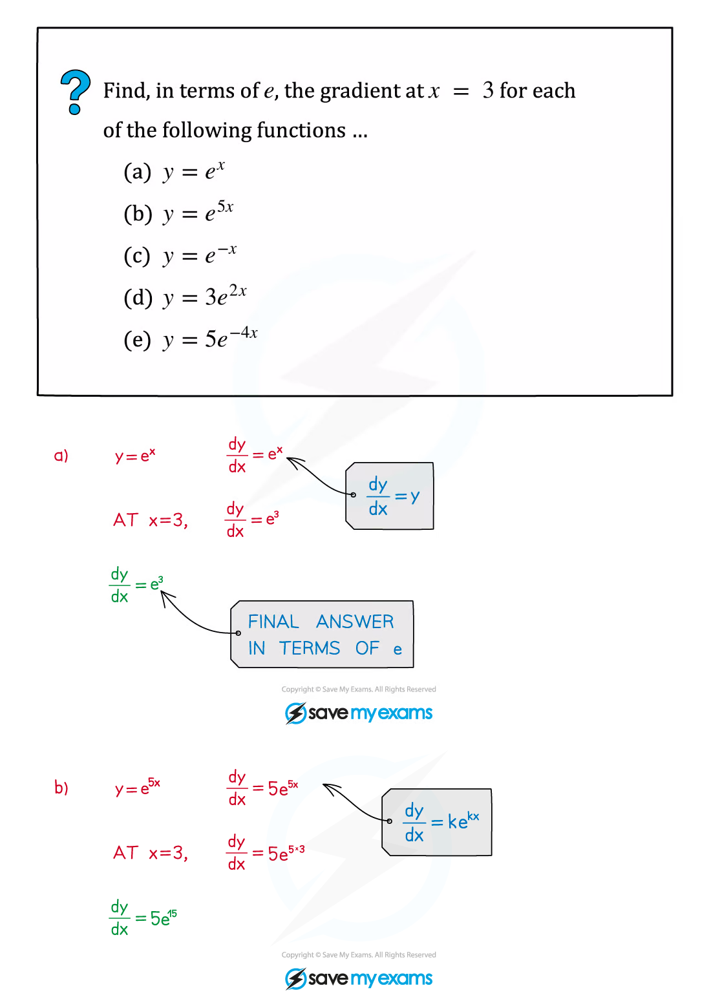
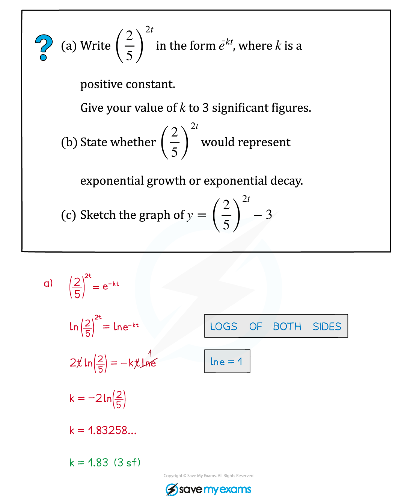
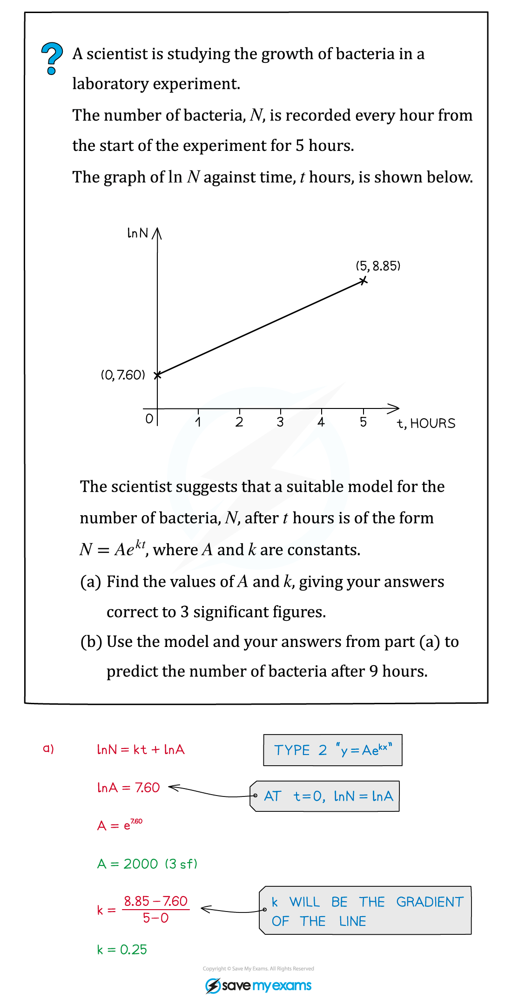
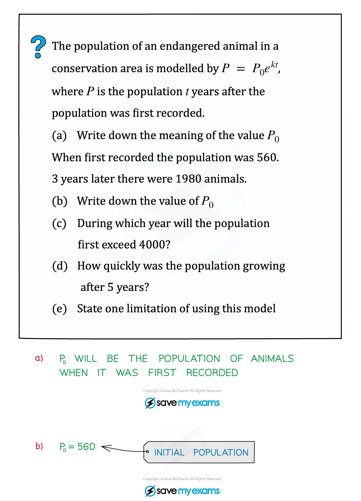

2. Logarithmic and exponential functions
Log laws · exponential graphs · equations · linearisation and modelling
本页依据 9709 Mathematics 2026–2027 syllabus 3.2，覆盖：
- logarithms 与 indices 的关系及 laws of logarithms（不要求 change of base）；
- e^x 与 \ln x 的定义、性质、inverse relationship 和图像；
- 用 logarithms 解 unknown 出现在指数中的 equations and inequalities；
- 用 logarithms 把关系式 transform to linear form，并由 gradient/intercept 求未知常数。
Learning objectives
1. Logarithms and indices
Definition and laws
对于 a>0 且 a\ne1，
\log_a x=y\iff a^y=x.
因此 logarithm 是 raising to a power 的 inverse，且定义域为 x>0。考纲要求的三条 laws 是：
\log_a(xy)=\log_a x+\log_a y,
\log_a\left(\frac{x}{y}\right)=\log_a x-\log_a y,
\log_a(x^n)=n\log_a x.
常用的反向操作是
\log_a u=\log_a v\implies u=v,
但必须先确认 u>0、v>0。ln x 表示 \log_e x。
Worked example · 笔记第 26 页

合并 logarithms 后，先解代数方程，再回到每一个原始 logarithm 的定义域检查。
2. Exponential functions and graphs
y=a^x and y=e^x
所有 y=a^x 都经过 (0,1)，因为 a^0=1。
- a>1：exponential growth，图像随 x 增大而增大；
- 0<a<1：exponential decay，图像随 x 增大而减小；
- 两者都以 y=0 为 horizontal asymptote；
- y=e^x 的 inverse function 是 y=\ln x，因此 y=\ln x 是 y=e^x 关于 y=x 的反射。
对 k>0，y=e^{kx} 是 growth，y=e^{-kx} 是 decay。若有系数 A，y=Ae^{kx} 的初始值为 A，但 asymptote 仍是 y=0。
Worked example · 笔记第 5 页

Worked example · 笔记第 22 页

Derivatives needed for graph questions
\frac{d}{dx}e^x=e^x,\qquad \frac{d}{dx}e^{kx}=ke^{kx}.
所以 y=e^{kx} 在 x=0 的 gradient 是 k，而 y=Ae^{kx} 在 x=0 的 gradient 是 Ak。
3. Solving exponential equations
Direct logarithm method
当未知数只出现在一个指数中，例如 a^{f(x)}=b，两边取 logarithm：
f(x)\ln a=\ln b.
若底数相同，可以先用 laws of indices；若出现 e^{-kx}，注意 e^{-kx}=1/e^{kx}。
Worked example · 笔记第 10 页

Worked example · 笔记第 31 页

Exponential inequalities
若 a>1，a^x 是 increasing，所以指数不等号方向不变；若 0<a<1，a^x 是 decreasing，所以转化为 x 的不等式时方向反转。用 logarithms 时也要注意 \ln a 的正负。
4. Linearisation
Standard linear forms
若
y=kx^n,
则
\ln y=\ln k+n\ln x,
所以 plotting \ln y against \ln x 得到 gradient n、intercept \ln k。
若
y=k(a^x),
则
\ln y=\ln k+x\ln a,
所以 plotting \ln y against x 得到 gradient \ln a、intercept \ln k。
还要识别
a^y=bx\implies y=\frac1{\ln a}\ln x+\frac{\ln b}{\ln a}.
Worked example · 笔记第 37 页

Worked example · 笔记第 53 页

5. Exponential growth and decay modelling
Model N=Ae^{kt}
在 model N=Ae^{kt} 中：
- A 是 t=0 时的 initial value；
- k>0 表示 growth，k<0 表示 decay；
- growth/decay rate 是
\frac{dN}{dt}=kAe^{kt}=kN;
- 若题目要求“after t years”的 rate，要先求 N(t)，再计算 kN(t)；
- 必须说明 model 的 limitation，例如 population 不会无限增长、环境条件不会永久不变。
Worked example · 笔记第 44 页

6. Paper 3 past-paper questions
本节精选 20 道 2020–2024 Paper 3 中与 logarithmic and exponential functions 直接相关的题目。题目保持原题，答案按 mark scheme 写出定义域、代换、线性化步骤和最终答案。
Equations and inequalities
Example 1 · Exponential inequality · 9709/31/M/J/20 Q1
indicesinequality
Find the set of values of x for which 2(3^{1-2x})<5^x. Give your answer in a simplified exact form. [4]
Show detailed mark scheme answer
Take natural logarithms:
\ln2+(1-2x)\ln3<x\ln5.
Rearranging,
\ln6<x\ln45.
Since \ln45>0,
\boxed{x>\frac{\ln6}{\ln45}}.PastPaper/2020/2020/9709-s20-qp-31.pdf and matching mark scheme.
Example 2 · Logarithmic equation · 9709/31/O/N/20 Q2
log lawsdomain
Solve \log_{10}(2x+1)=2\log_{10}(x+1)-1. [4]
Show detailed mark scheme answer
The logarithms require 2x+1>0 and x+1>0, so x>-1/2.
Use 1=\log_{10}10:
\log_{10}(2x+1)=\log_{10}\left(\frac{(x+1)^2}{10}\right).
Therefore 2x+1=(x+1)^2/10, so
x^2-18x-9=0.
Thus x=9\pm3\sqrt{10}. Both satisfy x>-1/2:
\boxed{x=9-3\sqrt{10}\quad\text{or}\quad x=9+3\sqrt{10}}.PastPaper/2020/2020/9709_w20_qp_31.pdf and matching mark scheme.
Example 3 · Logarithm and exponential · 9709/32/O/N/20 Q1
e^x3 d.p.
Solve \ln(1+e^{-3x})=2. Give the answer correct to 3 decimal places. [3]
Show detailed mark scheme answer
Exponentiate both sides:
1+e^{-3x}=e^2\implies e^{-3x}=e^2-1.
Taking logarithms,
-3x=\ln(e^2-1),
so
\boxed{x=-\frac13\ln(e^2-1)=-0.618\text{ (3 d.p.)}}.PastPaper/2020/2020/9709_w20_qp_32.pdf and matching mark scheme.
Example 4 · Linear form and intersection · 9709/32/O/N/20 Q3
linearisationgradient
The variables x and y satisfy 2^y=3^{1-2x}.
(a) By taking logarithms, show that the graph of y against x is a straight line. State the exact value of its gradient. [3]
(b) Find the exact x-coordinate of the point of intersection of this line with y=3x. Give your answer in the form \dfrac{\ln a}{\ln b}. [2]
Show detailed mark scheme answer
Taking logarithms,
y\ln2=(1-2x)\ln3,
y=\frac{\ln3}{\ln2}-\frac{2\ln3}{\ln2}x.
This is linear in x, with gradient
m=\boxed{-\frac{2\ln3}{\ln2}}.
At the intersection, y=3x:
3x\ln2=(1-2x)\ln3,
x(3\ln2+2\ln3)=\ln3.
Since 3\ln2+2\ln3=\ln(2^3\cdot3^2)=\ln72,
\boxed{x=\frac{\ln3}{\ln72}}.PastPaper/2020/2020/9709_w20_qp_32.pdf and matching mark scheme.
Example 5 · Logarithmic equation · 9709/32/F/M/21 Q1
log lawsdomain
Solve \ln(x^3-3)=3\ln x-\ln3. Give your answer correct to 3 significant figures. [3]
Show detailed mark scheme answer
The domains require x>0 and x^3-3>0, hence x>\sqrt[3]3.
Use the logarithm laws:
\ln(x^3-3)=\ln\left(\frac{x^3}{3}\right).
Therefore x^3-3=x^3/3, so 2x^3/3=3 and x^3=9/2.
The valid solution is
\boxed{x=\sqrt[3]{\frac92}=1.65\text{ (3 s.f.)}}.PastPaper/2021/2021/9709_m21_qp_32.pdf and matching mark scheme.
Example 6 · Modulus of an exponential · 9709/31/O/N/21 Q1
exponentialcase split
Solve 4|5^x-1|=5^x, giving your answers correct to 3 decimal places. [4]
Show detailed mark scheme answer
Let u=5^x, so u>0.
If u\ge1, then 4(u-1)=u, giving u=4/3 and
x=\frac{\ln(4/3)}{\ln5}=0.179\ldots.
If 0<u<1, then 4(1-u)=u, giving u=4/5 and
x=\frac{\ln(4/5)}{\ln5}=-0.139\ldots.
Both roots satisfy their assumed cases:
\boxed{x=0.179\quad\text{or}\quad x=-0.139}.PastPaper/2021/2021/9709_w21_qp_31.pdf and matching mark scheme.
Example 7 · Linearisation and parameter · 9709/32/F/M/21 Q3
linearisationgradient
The variables x and y satisfy x=A(3^{-y}), where A is a constant.
(a) Explain why the graph of y against \ln x is a straight line and state its exact gradient. [3]
It is given that the line intersects the y-axis at y=1.3. (b) Calculate A correct to 2 decimal places. [2]
Show detailed mark scheme answer
Taking logarithms,
\ln x=\ln A-y\ln3,
so
y=-\frac1{\ln3}\ln x+\frac{\ln A}{\ln3}.
This is linear in \ln x, with gradient
\boxed{-\frac1{\ln3}}.
At the y-axis, \ln x=0 and y=1.3, so 1.3=\ln A/\ln3. Thus
A=3^{1.3}=4.171\ldots\implies\boxed{A=4.17}.PastPaper/2021/2021/9709_m21_qp_32.pdf and matching mark scheme.
Example 8 · Exponential equation · 9709/31/M/J/22 Q1
indices2 d.p.
Solve 2(3^{2x-1})=4^{x+1}, giving your answer correct to 2 decimal places. [4]
Show detailed mark scheme answer
Take logarithms:
\ln2+(2x-1)\ln3=(x+1)\ln4.
Collect the x terms:
x(2\ln3-\ln4)=\ln4+\ln3-\ln2=\ln6.
Since 2\ln3-\ln4=\ln(9/4),
\boxed{x=\frac{\ln6}{\ln(9/4)}=2.21\text{ (2 d.p.)}}.PastPaper/2022/2022/9709_s22_qp_31.pdf and matching mark scheme.
Example 9 · Logarithm and exponential · 9709/32/M/J/22 Q1
logarithm3 d.p.
Solve \ln(e^{2x}+3)=2x+\ln3, giving your answer correct to 3 decimal places. [4]
Show detailed mark scheme answer
The right-hand side is \ln(3e^{2x}), so
e^{2x}+3=3e^{2x}.
Hence 2e^{2x}=3, so e^{2x}=3/2 and
\boxed{x=\frac12\ln\frac32=0.203\text{ (3 d.p.)}}.PastPaper/2022/2022/9709_s22_qp_32.pdf and matching mark scheme.
Example 10 · Linearised power law · 9709/32/F/M/22 Q3
linearisationpower law
The variables x and y satisfy x^n y^2=C. The graph of \ln y against \ln x passes through (0.31,1.21) and (1.06,0.91). Find n and C correct to 2 decimal places. [5]
Show detailed mark scheme answer
Take logarithms:
n\ln x+2\ln y=\ln C,
\ln y=-\frac n2\ln x+\frac12\ln C.
The gradient is
m=\frac{0.91-1.21}{1.06-0.31}=-0.4.
Thus -n/2=-0.4, giving n=0.8.
Using (0.31,1.21),
1.21=-0.4(0.31)+\frac12\ln C,
so \ln C=2.668 and C=e^{2.668}=14.411\ldots.
\boxed{n=0.80,\qquad C=14.41}.PastPaper/2022/2022/9709_m22_qp_32.pdf and matching mark scheme.
Example 11 · Exponential equation · 9709/32/O/N/22 Q1
indicesexact logarithm
Solve 2^{3x-1}=5(3^{1-x}). Give your answer in the form \dfrac{\ln a}{\ln b}. [4]
Show detailed mark scheme answer
Rewrite both sides to collect the x powers:
2^{3x-1}=\frac{2^{3x}}2,\qquad5(3^{1-x})=\frac{15}{3^x}.
Multiplying by 2\cdot3^x gives
6^x2^{3x}=30\implies24^x=30.
Therefore
\boxed{x=\frac{\ln30}{\ln24}}.PastPaper/2022/2022/9709_w22_qp_32.pdf and matching mark scheme.
Example 12 · Logarithmic equation · 9709/33/O/N/22 Q1
log laws3 d.p.
Solve \ln(2x-1)=2\ln(x+1)-\ln x. Give your answer correct to 3 decimal places. [4]
Show detailed mark scheme answer
The domain is x>1/2. Combine the right-hand side:
\ln(2x-1)=\ln\left(\frac{(x+1)^2}{x}\right).
Thus x(2x-1)=(x+1)^2, giving
x^2-3x-1=0.
The roots are (3\pm\sqrt{13})/2; only the positive root lies in x>1/2:
\boxed{x=\frac{3+\sqrt{13}}2=3.303\text{ (3 d.p.)}}.PastPaper/2022/2022/9709_w22_qp_33.pdf and matching mark scheme.
Example 13 · Logarithmic rearrangement · 9709/32/F/M/23 Q1
inverse relationshiprearrangement
It is given that x=\ln(2y-3)-\ln(y+4). Express y in terms of x. [3]
Show detailed mark scheme answer
Combine logarithms:
x=\ln\left(\frac{2y-3}{y+4}\right).
Exponentiating,
e^x=\frac{2y-3}{y+4}.
Therefore e^x(y+4)=2y-3, so
y(2-e^x)=3+4e^x,
\boxed{y=\frac{3+4e^x}{2-e^x}}.PastPaper/2023/2023/9709_m23_qp_32.pdf and matching mark scheme.
Example 15 · Logarithmic equation · 9709/32/M/J/23 Q2
domainexact solution
Solve \ln(2x^2-3)=2\ln x-\ln2, giving your answer in an exact form. [3]
Show detailed mark scheme answer
The right-hand side is \ln(x^2/2), with x>0. Also 2x^2-3>0, so x>\sqrt{3/2}.
Equating the positive arguments,
2x^2-3=\frac{x^2}{2}.
Therefore 3x^2/2=3, so x^2=2. The domain selects the positive root:
\boxed{x=\sqrt2}.PastPaper/2023/2023/9709_s23_qp_32.pdf and matching mark scheme.
Example 16 · Logarithmic equation · 9709/33/M/J/23 Q1
log laws3 d.p.
Solve \ln(x+5)=5+\ln x. Give your answer correct to 3 decimal places. [4]
Show detailed mark scheme answer
The domain is x>0. Since 5=\ln(e^5),
\ln(x+5)=\ln(e^5x).
Thus x+5=e^5x, so
x(e^5-1)=5,
\boxed{x=\frac5{e^5-1}=0.034\text{ (3 d.p.)}}.PastPaper/2023/2023/9709_s23_qp_33.pdf and matching mark scheme.
Linearisation and modelling
Example 17 · Linearised exponential model · 9709/31/O/N/23 Q3
linearisationy=ab^x
The variables x and y are related by y=ab^x. Points on the graph of \ln y against x are (1,3.7) and (2.2,6.46). Find a and b. [4]
Show detailed mark scheme answer
Taking logarithms,
\ln y=\ln a+x\ln b.
The gradient is
\ln b=\frac{6.46-3.7}{2.2-1}=2.3,
so b=e^{2.3}=9.974\ldots.
Using (1,3.7),
\ln a=3.7-2.3=1.4,
so a=e^{1.4}=4.055\ldots.
Therefore
\boxed{a=4.06,\qquad b=9.97}.PastPaper/2023/2023/9709_w23_qp_31.pdf and matching mark scheme.
Example 18 · Logarithmic equation · 9709/31/M/J/24 Q2
log laws2 d.p.
Solve \ln(x-5)=7-\ln x. Give your answer correct to 2 decimal places. [4]
Show detailed mark scheme answer
The domain is x>5. Since 7=\ln(e^7),
\ln(x-5)+\ln x=7=\ln(e^7).
Therefore x(x-5)=e^7, giving
x^2-5x-e^7=0.
The roots are
x=\frac{5\pm\sqrt{25+4e^7}}2.
Only the positive root satisfies x>5:
\boxed{x=\frac{5+\sqrt{25+4e^7}}2=35.71\text{ (2 d.p.)}}.PastPaper/2024/2024/A-Level-CAIE数学QP-202406-Mathematics-P31-A-Level题库大全小程序.pdf and matching mark scheme.
Example 19 · Linearised power relation · 9709/31/M/J/24 Q3
linearisationnearest integer
The variables x and y satisfy a^y=bx, where a and b are constants. The graph of y against \ln x passes through (0.336,1.00) and (1.31,1.50). Find a and b, giving each value correct to the nearest integer. [4]
Show detailed mark scheme answer
Taking logarithms,
y\ln a=\ln b+\ln x,
y=\frac1{\ln a}\ln x+\frac{\ln b}{\ln a}.
The gradient is
m=\frac{1.50-1.00}{1.31-0.336}=0.51335\ldots=\frac1{\ln a}.
Hence \ln a=1/m=1.947\ldots, so a=e^{1.947\ldots}=7.014\ldots.
The intercept is 1.00-m(0.336)=0.8275\ldots, which equals \ln b/\ln a. Hence \ln b=1.611\ldots and b=5.012\ldots.
\boxed{a=7,\qquad b=5}.PastPaper/2024/2024/A-Level-CAIE数学QP-202406-Mathematics-P31-A-Level题库大全小程序.pdf and matching mark scheme.
Example 20 · Exponential equation · 9709/32/O/N/24 Q4
indices3 d.p.
Solve the equation 5^x=5^{x+2}-10. Give your answer correct to 3 decimal places. [3]
Show detailed mark scheme answer
Use the laws of indices:
5^{x+2}=25\cdot5^x.
Therefore
5^x=25\cdot5^x-10\implies24\cdot5^x=10,
so 5^x=5/12. Taking logarithms,
x\ln5=\ln\frac5{12}.
Hence
\boxed{x=\frac{\ln(5/12)}{\ln5}=-0.544\text{ (3 d.p.)}}.PastPaper/2024/2024/A-Level-CAIE数学QP-202410-Mathematics-P32-A-Level题库大全小程序.pdf and matching mark scheme.